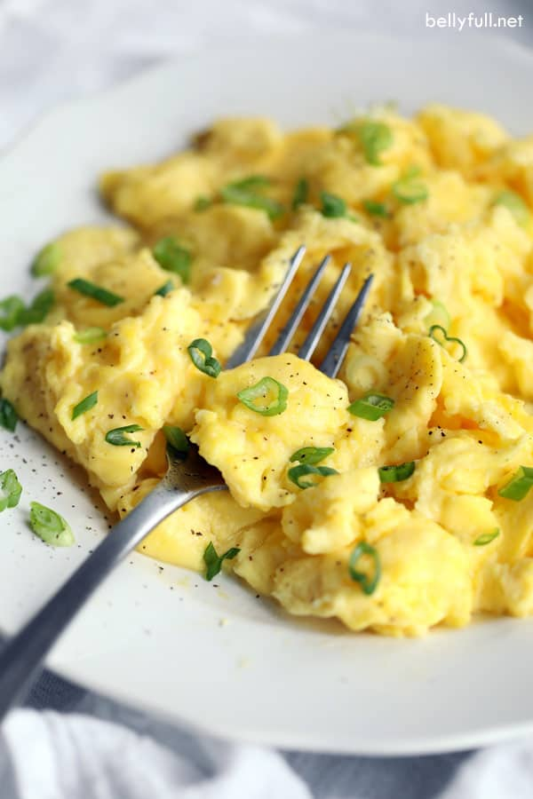

Scrambled Eggs Recipe

The Scrambled Eggs
A very common breakfast meal, eggs in this dish are cooked in a way that
will make for a fluffy, creamy, and flavorful texture!!!
Ingredients
- 4 large eggs
- 1/4 cup half-n-half (milk)
- 1/4 teaspoon Kosher salt
- 1 tablespoon unsalted butter
- black pepper, for serving
- fresh chopped herbs, for serving
Directions
-
In a mixing bowl, whisk together the eggs, half-n-half, and salt,
until mixture is light, foamy, and uniform in texture
- Melt the butter in a small nonstick pan over medium heat
- Add eggs to center of pan and reduce heat to medium-low
-
Wait until edges are starting to set, then use a spatula to
gently push eggs from one end of the pan to the other multiple times.
-
When eggs are mostly cooked, slowly fold the eggs into itself a couple of times,
bring them together
- Remove heat, transfer to plates, and serve with pepper and herbs. There you go.
Back to Main Page